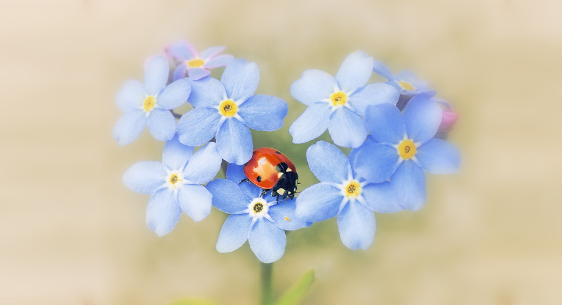

我们都是虫子，这是刘慈欣的科幻小说《三体》第一部结尾写的一句话。生活在地球上的我们，习惯了一切以人类为中心的思考方式，却很少想过，也许在更高维度的生命面前，我们就像是虫子般的渺小存在，也许外星生命吹口气，或者指头一捻，我们就消失了，或者碎成粉末，就像我们对待地球上的虫子一般。 全世界的昆虫可能有1000万种，大概占地球所有生物物种的一半。
但目前有名有姓的昆虫种类仅100万种，也就是说还有90%的昆虫是我们不认识的。中文里头，虫字旁的字一共有468个，而城市生活中，我们叫得出名字来的虫子更是屈指可数，除了怎么也灭不完的蚊子苍蝇蟑螂，我们能遇到的虫子好像越来越少了，以至于在夏天的夜里，听到窗外的蝉鸣，都会莫名有些小小的兴奋。 虽然是女生，但好像我从小就不怎么害怕虫子。这大概得益于小时候住奶奶家四合院的经历。院子里总有各种虫子，蚂蚁，蜘蛛，蜗牛，毛毛虫，瓢虫，蚯蚓，蝴蝶，飞蛾，当然也少不了蚊子苍蝇。曾经有男生抓来青黑色花纹的毛毛虫想吓唬我，结果我完全没反应，因为我早就在奶奶家的院子里，用小竹棍拨弄过花花肥肥的毛毛虫了；看到成群结队的蚂蚁，我会给他们制造一点障碍，比如搬一小块石头放在他们行经的路线中间，看他们爬上爬下或者绕道走；每次活捉了蚊子，心里总是充满仇恨的，会变着法先虐待它一会，比如把翅膀先撕下来，然后把脚撕下来，最后把吸血的那根针也揪下来，心里想着，看你还怎么咬人。或者直接把蚊子举到台灯下，凑近灯泡，看它的身体慢慢开始冒烟。现在想来，当时的我还真是残忍，不过直到现在我还保留着撕蚊子翅膀的习惯。要不就直接拍死，如果是抓到活的，就先撕翅膀，然后扔到电蚊拍上。
瓢虫是院子里的小伙伴们最喜欢的虫子之一，好像大家总在比赛谁先发现七星瓢虫，每次抓来瓢虫的第一件事就是数它背上有几个点，如果是七个，总要拿去院子里其他小伙伴那里炫耀一番，看，我这只是七星瓢虫，任凭瓢虫在两指之间挣扎着想逃，挠得手指痒痒的。蜗牛是小伙伴们喜欢的另外一种昆虫，严格来讲，蜗牛已经不算昆虫了，雨后蜗牛常常出现在后院儿的石阶上，石阶上长满青苔，通往后院的一个小山坡，山坡上住着一户神秘的人家，儿子好像有精神疾病，一家都很少出门。这个石阶和山坡就是小伙伴们探险的场所。我喜欢把蜗牛放在掌心，轮流触碰它的两只触角，看它们慢慢地缩进去又伸出来，最后整个头和尾都缩进去了，才把它们放回青苔石阶上，不过印象中那时的蜗牛都挺小的，来广州后，发现这边的蜗牛都好大个，比我的鼻子还大。小时候还在还在抽屉里养过蚕，已经记不清当时收获了多少蚕茧，也记不清最后它们有没有变成飞蛾，只记得那个小抽屉，抽屉里的小纸盒，纸盒里的桑叶和一天天长大的蚕宝宝。
《三体》第二部《黑暗森林》序章中，对褐蚁有这样一段描述：在前方的峭壁上，它遇到了一道长长的沟槽，与峭壁表面相比，沟槽的凹面粗糙一些，颜色也不同，呈灰白色，它沿着沟槽爬，粗糙的表面使攀登容易了许多。沟槽的两端都有短小的细槽。下端的细槽与主槽垂直，上端的细槽则与主槽成一个角度相交。当褐蚁重新踏上蛸壁光滑的黑色表面后，它对槽的整体形状有了一个印象：1。我特别喜欢这段描写，褐蚁通过爬来感知身下的世界，可能在人类的认知中只需要不到1s得出的结论，褐蚁却需要几分钟甚至更长的时间。然而“弱小和无知不是生存的障碍，傲慢才是”。我想人要是想要感受慢生活，完全可以静下来，慢慢观察一只昆虫的一举一动，或者干脆闭上眼，只用触觉去感知周围的一切，像昆虫那样，慢慢去了解物体的轮廓和质感，感知周围的每一个细节。也许在模拟和感知微小之物的过程中，就能照见我们自己也不过是虫子一般的存在，而只有认识到自己的渺小，才能发现生命中真正的伟大。 收听本期电台，请移步：http://www.coletree.com/podcast/treeradio/094/